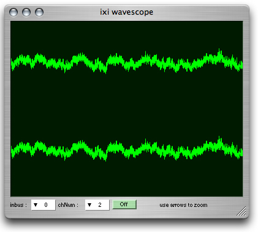

ixiQuarks : WaveScope

| Wave Scope |
| The Wave Scope represent a the waveform of a sound in time. (Samples in time). You can choose how many channels are represented and the channel number of the lowest channel. The keyboard arrows zoom into the sound both horizontally and vertically. |